按键盘 "↓" 开始倾听我的祝福
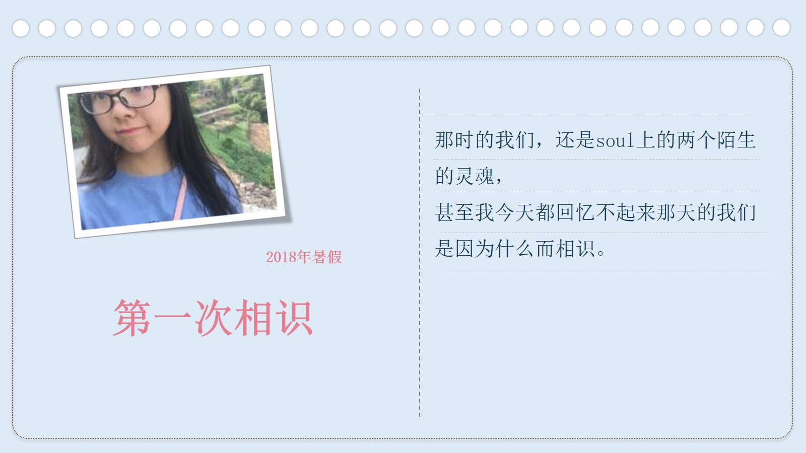
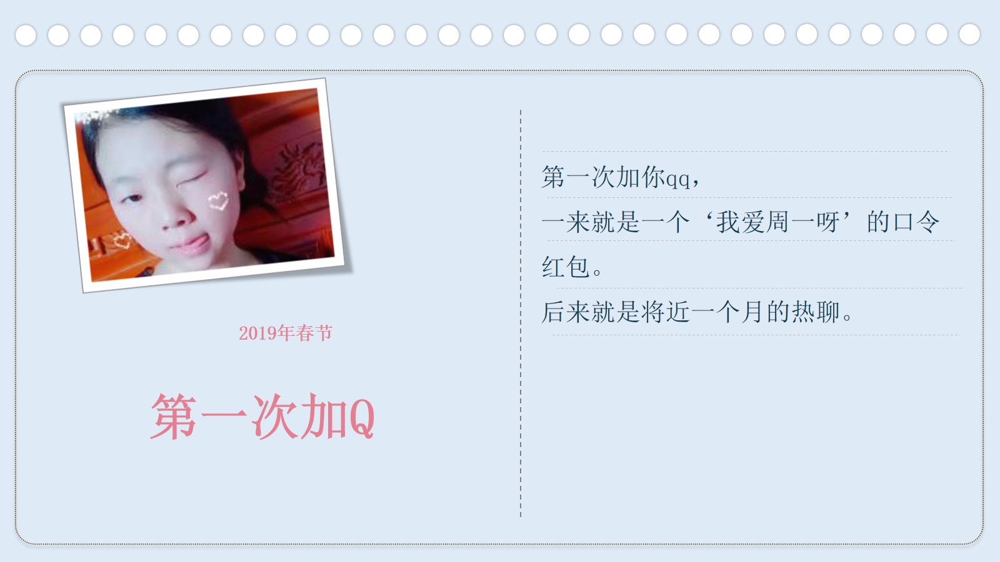
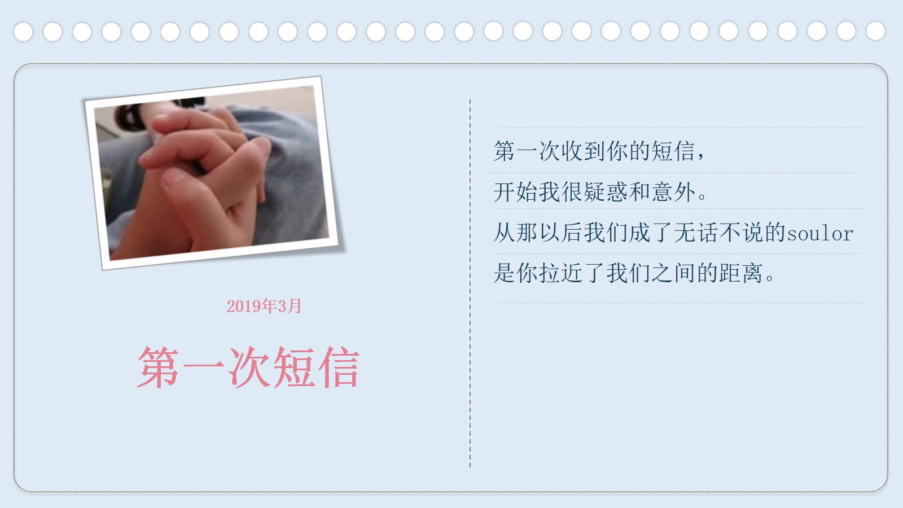
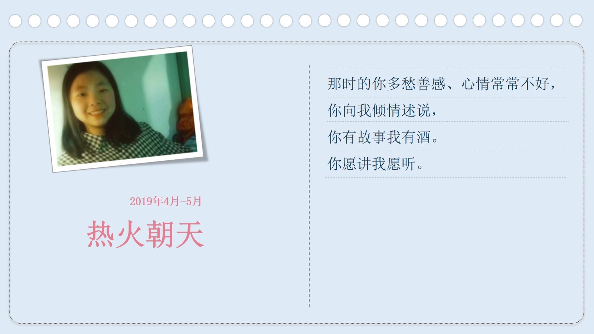
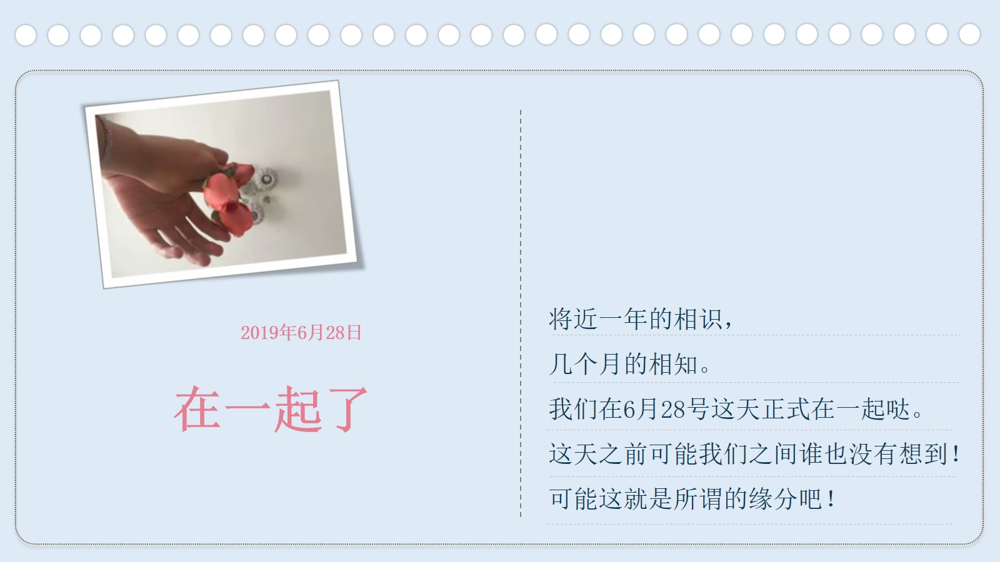
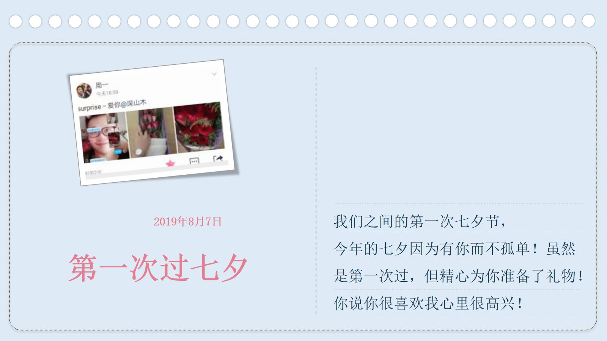
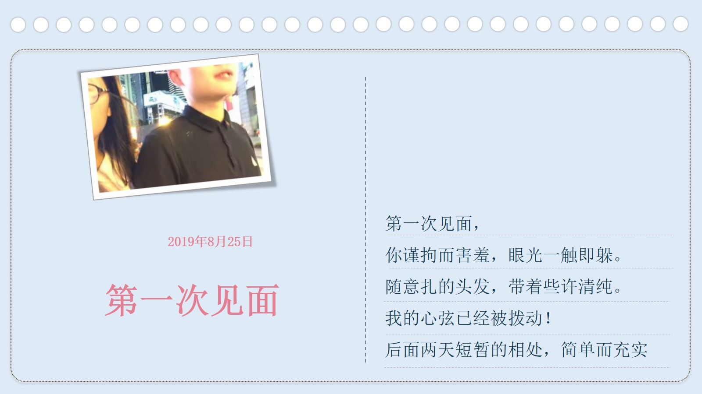
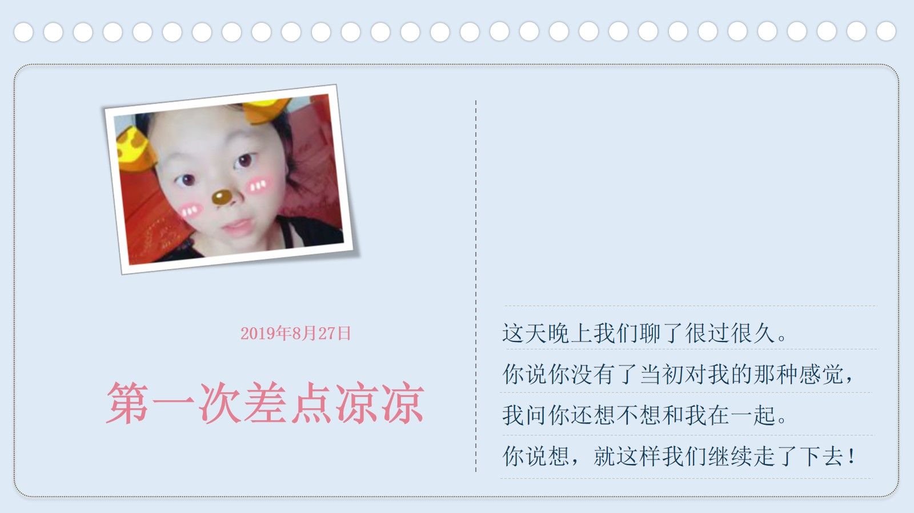
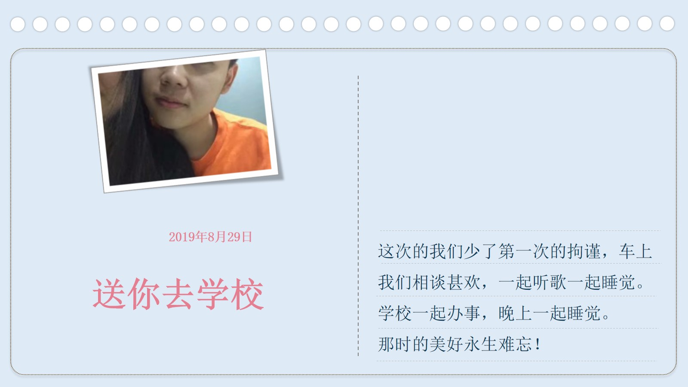
亲爱的周一
爱你丫
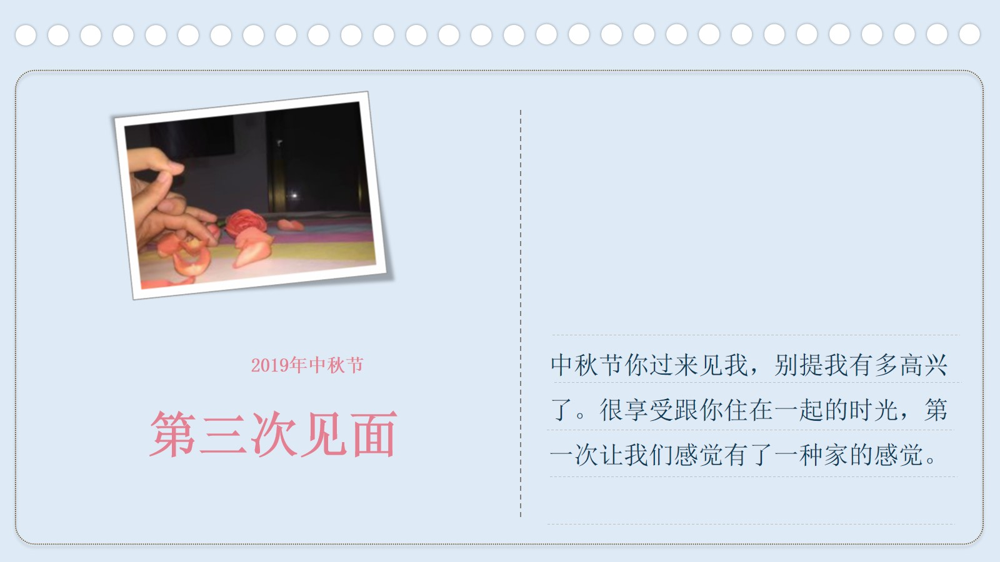
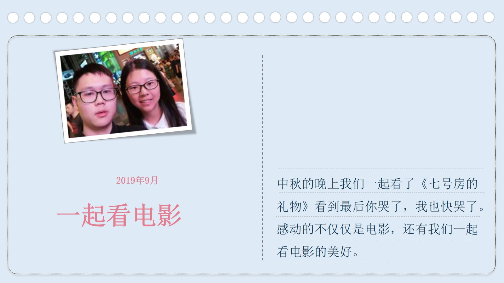
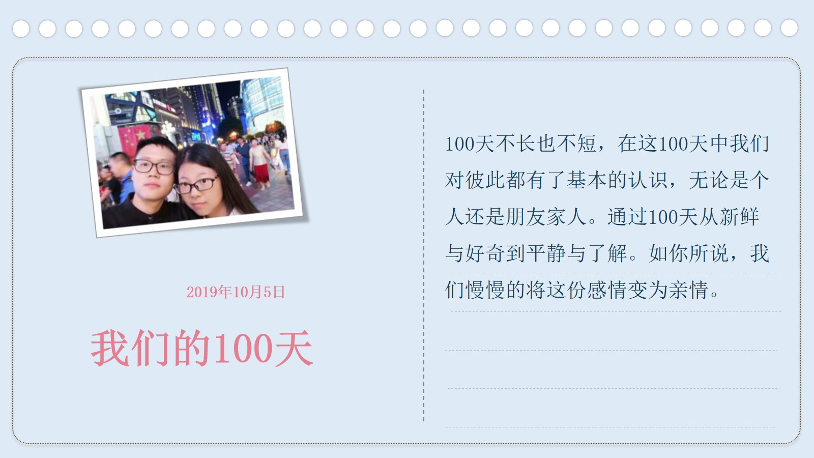

每当才兄看到周一的照片都很高兴

才兄和周一网上认识，他们会网恋吗？

终于有一天，他们说要在一起
有才兄好高兴
每天有才兄都会想跟周一聊天
时而有才兄会给周一打电话
不久我们迎来了我们之间的第一个七夕节
周一很高兴
有才兄也很高兴
周一回来了，有才兄鼓起勇气去找周一
第一次见面没有尴尬和生疏，周一说像是多年的老朋友见面
后来，有才兄便送周一去学校
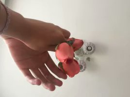那次的见面对我们来说经历了太多的第一次
后来，他们认定了彼此
有才兄心中多了一份责任，对周一也有了许诺
中秋节，周一同学来找有才兄了
那两天，他们一起逛了洪崖洞，一起去了有才兄的学校
然后我们度过了难忘的两天
有才兄感觉自己很幸运能遇到周一。
那天我们彼此仿佛有了家的感觉
他们偶尔也会出现矛盾和问题
有才兄不想这样
一定是我有什么做的不对，有才兄在想
如果没有了周一，生活真的就失去了很多色彩
如果没有心爱的女孩在身后
又怎会飞的更高更远
有才兄不想这样。他要为周一改变自己
周一说她大学要有所改变，将来要承担起她的那个家


我愿与你携手共进，你说过那个对的人
不是你一直苦苦追赶的人，而是那个能够抓住你一起走的人
祝福就像花草一样
需要用包容来浇灌

很快便迎来了我们的100天
有才兄想做点什么来纪念一下这个特殊的日子


看着礼物快要准备好了 有才兄很开心 因为他想象着周一收到礼物时 开心的样子

有才兄期待着下一次和周一的元旦相见 想到这个有才兄好开心
有才兄也会努力找工作挣钱
为了将来给周一一个安稳的家

有才兄很开心，因为他遇到了周一。
即使周一现在可能对有才兄可能已经没有了当初的那份喜欢
但是有才兄还是会对周一很好，
因为遇到一个自己喜欢的不容易,有才兄不想这么错过

周一总是对他们的未来没有太多信心，而有才兄就总是很乐观，谁都知道未来的路很长，未来的事谁也不知道，但有才兄愿意相信，愿意过好当下，期盼未来

周一：一年见你家长
周一：两年见我家长
周一：三年结婚
有才兄：好
愿得一人心，白首不相离
天天快乐
I love you
相信像这样的故事会一直延续下去。
无论精彩、平淡都会是他们喜欢的。
-- 按“Esc"键有惊喜